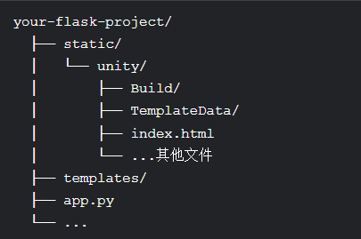
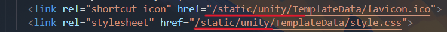
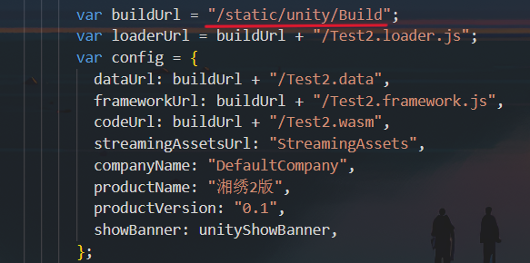
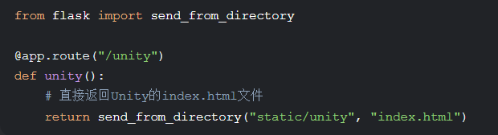
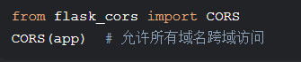

打开WebGL包
在vscode的插件库中安装Live Server插件
打开Unity的WebGL包，找到并打开index.html文件
右键菜单，找到并点击Open with Live Server就可以在网页中打开
网页中嵌入Unity
将Unity的WebGL包放在如图所示的文件夹中，保持项目目录结构相同
然后将index.html文件中的路径修改为/static/unity
将Build/xxx和TemplateData/xxx的路径改为绝对路径（添加/static/unity/前缀）
如果Unity生成的index.html中有类似loaderUrl: "Build/xxx.loader.js"的配置，同样需要修改路径
以Flask为例，配置路由
在原来的页面中添加跳转连接即可将Unity嵌入到网页中
常见问题
1.白屏或网页资源404
如何查看，进入网页后按F12，查看控制台，一般是资源加载失败，检查路径是否正确。
解决办法：
检查index.html中的路径是否包含/static/unity/前缀，检查Build/xxx和TemplateData/xxx的路径是否为绝对路径。
2.控制台提示跨域错误
解决办法：
启用Flask-CORS或确保资源路径统一端口
3.页面仍跳转到5500端口
解决办法：
关闭其他本地服务器，确保链接指向/unity路由